SICLIMAT X
This section provides background information on integrating and configuring Desigo CC with SICLIMAT X. For related procedures, see the step-by-step sections on integration, libraries and migration.
The management platform supports SICLIMAT-engineered Simatic S7 PLC. SICLIMAT X is a building automation system, comprising the management station and the integrated Engineering Manager tool.
SICLIMAT X Introduction
Compatibility
Compatibility List (V2.1) | |||
Topic | Description | Version | Supported |
SICLIMAT X-OS | Management station | 4.1 | Yes |
>4.1 | No | ||
SICLIMAT X Engineering Manager | Engineering tool | 4.1 | Yes |
>4.1 | No | ||
Simatic S7-300/400 | Programmable logic controller (PLC), communication link via Ethernet CP or PNIO interface | Any | Yes |
S5 Link | SICLIMAT Gateway to connect S5, Compas or LS300 process controller | any | No |
S7 Industrial Ethernet | Siemens S7 communication protocol (ISO on TCP); communication link via network adapter or Ethernet CP | N/A | Yes |
PROFINET | Process Field Network protocol; communication link via network adapter or Ethernet CP | Any | No |
PROFIBUS DP | Process Field Bus for Decentralized Peripherals protocol; communication link via PROFIBUS CP | Any | No |
Supported SICLIMAT X Function Blocks
The classical S7 data model essentially represents the data structures of the different primitive data types (Real, Integer, Boolean, and so on) that are aggregated to form compound functional blocks in SICLIMAT X. These function blocks are optimized for Building Automation and Room applications. For example, a measurement compound is composed of elements to indicate the present value, warning and alarm limits, Out of Service state, and so on.
Supported Function Blocks
- Plant control Commands; 1-step, 3-step; 15-step
- RX Room applications; CLC, FNC, VAV, RAD
- Sensor values
- Command values: Commands; 1-step, 3-step; 15-step
- Manipulated values
- Monitored values
- Control; Master-heating-, cascade-, deadband-
- Optimizer; Heattime-, Air Conditioning-
- Counter values
- Setpoints
Unsupported Function Blocks
(Not yet supported due to missing rescaling function).
- Setpoint ZAEH
Supported SICLIMAT X Graphic Symbols
The SICLIMAT X Graphic Symbols library (previously called Typicals), provided by Headquarter, is fully supported. The system provides 2D libraries for:
- Air handling
- Cooling
- Electrical
- Heating
- Device
- HVAC common
- Room
- Service
- Water
In addition, several new graphic templates are provided for:
- Heating Curve
- Characteristic chart
- Loop control
- Summer/Winter compensation
- Room applications
Licensing
In addition to the basic set of license features, and any other required license features (such as clients and options), sufficient S7 device connection and data point licenses must be activated to run the system.
S7 Device Connection Licenses
Each connected Simatic S7 consumes a S7 device connection license (sbt_gms_add_S7_connections). By installing the Simatic S7 extension module, eight S7 device connection licenses are released to be used in the whole system. To connect more than eight S7 devices to the management platform, additional license packages (56 S7 device connections) per Server or FEP are required.
Data point licenses
Migrated SICLIMAT data points consume Building Automation data points (sbt_gms_add_ba_dp). Physical I/O data points count one license point, while room applications count three points.
Count of Licensed Data Points | ||
Topic | Data Point Type | Weight |
Primary |
| One point |
Room | Desigo RX room applications | Three points |
SICLIMAT X Workspace
The Workspace provides information on the UI components for creating drivers, networks, device connections, and so on.
S7 Driver Workspace
The details of the S7 Driver display in the Object Configurator tab.
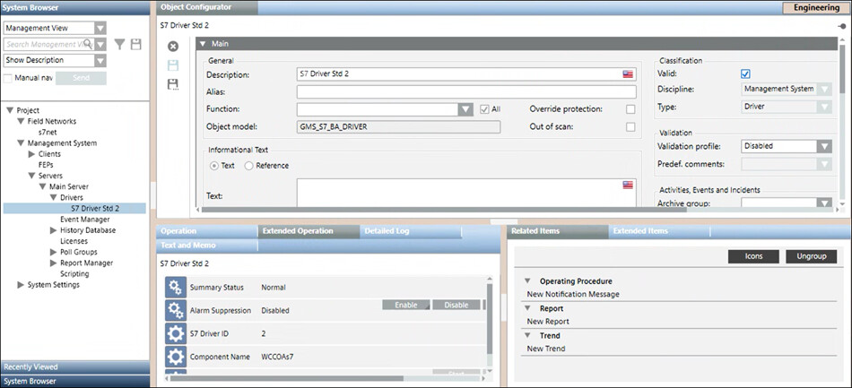
S7 Toolbar | ||
Icon | Name | Description |
| Delete object | Deletes the S7 driver. You must not delete the driver if it is monitoring a network. |

S7 Network Workspace
The S7 network workspace allows you to configure the network settings such as associating the S7 driver to the network and saving the association. The properties associated with the selected network display in the Operation tab or Extended Operation tab. You can also change the value of the poll interval. By default, this value is set to 0 ms. In order to delete the network, you must click Delete that displays in the toolbar in the Object Configurator tab.
that displays in the toolbar in the Object Configurator tab.
You can associate the driver to the network by selecting the driver from the Monitored by driver drop-down list.
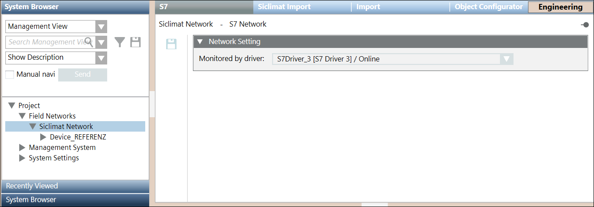
Siclimat X Importer Workspace
The Siclimat X Importer allows you to manage the import of field data (engineering objects) described in the XML file. You can import the field data (engineering objects) described in configuration file (XML file) from the Siclimat X device importer workspace.
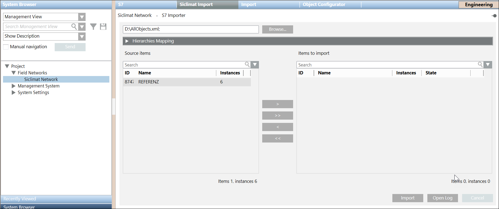
Import Fields | |
Item | Description |
Browse | Displays the Open dialog box and allows you to select a file to import. The path of the selected file appears in the field. |
Source Items | Displays a preview of all the objects available in the selected xml file. These objects are identified by the following:
|
Imported Items | Displays a preview of all the objects selected for import. These objects are identified by the following:
NOTE: |
Search | Allows you to apply a search filter to the content that displays in the Source Items or Imported Items list. |
Delete unselected items from views | Allows you to specify whether or not, during the import, all items available in the views, but not present in the file to import, must be deleted. If you check this option, any items relevant to the objects are also deleted (text groups included). |
Import | Starts the import process. NOTE: |
Cancel | Aborts the import process. NOTE: |
Analysis Log | Displays the Preimport File Log dialog box with the errors encountered during pre-processing phase of the csv file. NOTE: |
Import Log | Displays the Import File Log dialog box with the details of the import process. NOTE: |
Device Information Expander
This expander displays the S7 device data settings. You can view the device instance (Numeric ID of the S7 device) and device name and modify the other parameters.
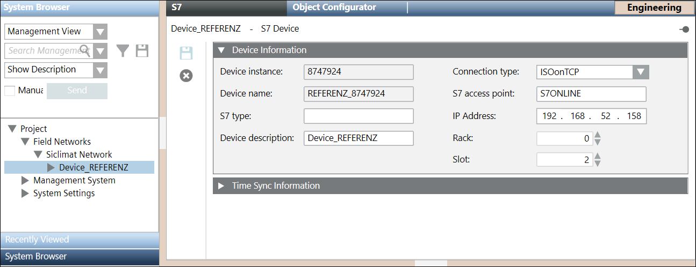
Item | Description |
Device instance | Instance of the S7 device |
Device name | Name of the imported S7 device |
S7 type | Type of the S7 CPU. |
Device description | Description of the S7 device |
Connection type | ConnectionType of the S7 device. |
S7 access point | Name of the access point of the S7 device. The value must always be S7ONLINE. |
IP Address | IP address of the PLC used to establish a connection to a PLC |
Rack | Number of the rack on which the S7 CPU resides. |
Slot | Number of the slot on which the S7 CPU resides. |
Time Sync Information Expander
The Time Sync Information expander allows you to specify the following parameters:
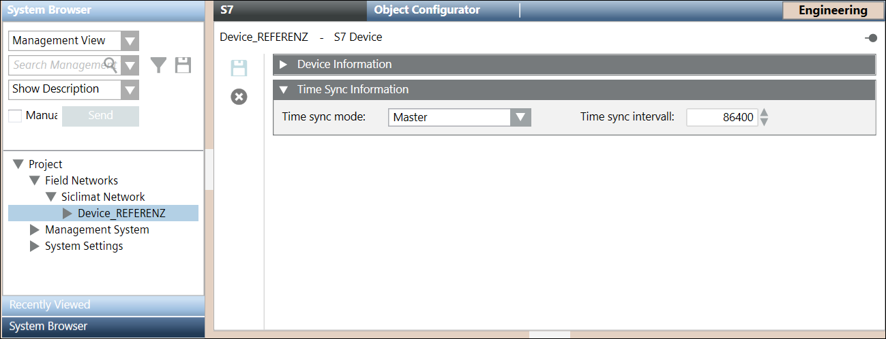
Item | Description |
Time sync mode | The Time sync mode determines if and how the current time on the PLC will be accessed and/or modified. It can have the following values: |
Time sync interval | Determines how often the current time is read from the PLC or written to the PLC. |
SICLIMAT X Migration Process
The migration process allows transferring the SICLIMAT X-OS environment, step-by-step, to the system.
You can freely choose to migrate from one to all of the Simatic S7 devices of one X-OS or several X-OS systems in one step. During the migration process, appropriate tools can support, for example, the transfer of data point information and structures as well as scheduling data, graphics and scriptings.
The maximum size of the system that can be migrated depends on the number of data points to be migrated, the installed Automation level base, the designed system topology and the hardware in use.
Only systems with Simatic S7 can be directly migrated. The Simatic S5 PLCs (or other legacy process controllers) first must be migrated to Simatic S7. It makes more sense that SICLIMAT X-OS migrates to the system server all at once, because this minimizes any additional maintenance effort. If for some reasons this is not possible, FEPs can also replace the X-OS.
The size of the component system can be calculated by the accumulated total number of configured data points and process devices in the SICLIMAT X-OS management stations. The necessary information can be obtained from the System Info Files (SIX info). The following values are important for calculating the sum:
- Count of configured S7 process devices
- Count of configured data points for:
- Monitored values
- Sensor values
- Counter values
- Command values
- Manipulated values
- Control command values
System Architectures
Single Server
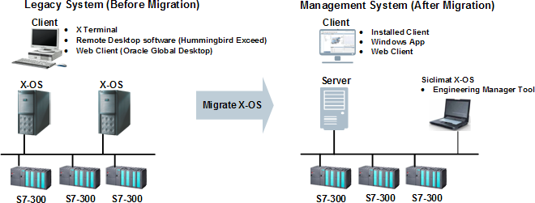
Typical Use Cases
- Normally 1 to 2 SICLIMAT X-OS systems
- Up to 64 S7 device connections
- Hardware material optimization
- Service effort optimization
Single Server and Multiple FEPs
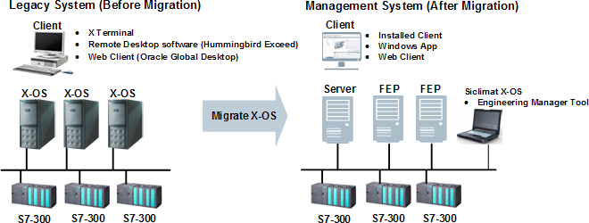
Typical Use Cases
- Multiple SICLIMAT X-OS systems
- More than 64 S7 device connections
- Fixed IT infrastructure
Software Options
The following matrix describes the licensed features of the legacy system SICLIMAT X-OS and indicates the equivalent management platform licenses.
Licensed Software Options (V2.1) Comparability | ||
Software Option | SICLIMAT X-OS | Management Platform |
Server | 1..n X-OS Base software SIX Info: Grund-Software | 1 Server Base feature set License: sbt_gms_fset_base |
Clients | Variants:
SIX Info: Bedienplatz | Variants:
The most appropriate variant has to be elaborated case by case. License: sbt_gms_add_client |
S7 connections | S7 base connectivity for X-OS SIX Info: S7-Anbindung | S7 base connectivity up to eight S7 connections possible with Simatic S7 extension module installation |
PLC connections | PLC connectivity SIX Info: S7-Anbindung | 56 additional S7 connections for Server or FEP License: sbt_gms_add_S7_connections |
Data points | Packages of 1000 licensed data points (all function blocks) SIX Info: Anzahl Datenpunkte [1000*] | Multiple packages of licensed Building Automation data points (physical I/Os) License: sbt_gms_add_ba_dp |
PLC Programming | Engineering Tool SIX Info: AS-Projektierung | Not applicable |
Graphics Editor | Graphical Editor Application SIX Info: Anlagenbildeditor | Graphics Editor application License: sbt_gms_opt_graph_ed |
Program Logic | TECLA Script Editor Application SIX Info: Schaltprogrammeditor | Macros and Reactions applications Scripting not yet available License: sbt_gms_opt_reactionProc |
Trends Archiving | Multiple packages of licensed trend series archives SIX Info: Trend; Anzahl Trendarchive; Zaehlwertarchivierung | Trend series are stored in Microsoft SQL database as part of the standard feature set Archiving not yet available |
Alarm Notification | Event routing as internal email SIX Info: E-Mail | Notification application (email, SMS and paging services) License: sbt_gms_opt_notification |
Other Applications | Peak-Demand-Limiting application Excel-based calculation tool Bar, pie, and trend chart tool Infobroker for Client license sharing | Not applicable Alternative solutions have to be elaborated case by case. |
S5-Link | Southbound gateway for legacy subsystems SIX Info: BS760-Anbindung; GMA-Kopplung; RX-Anbindung; TEC-Anbindung | Not applicable Alternative solutions have to be elaborated case by case. |
OPC Client | OPC DA Client with packages of 1000 licensed items SIX Info: OPC-Client(#Items PccId) | OPC DA Client with multiple packages of licensed SCADA tags License: sbt_gms_add_scada_tag |
Data Interface | Northbound interface to read/write values, commonly used with third-party OPC DA Server SIX Info: SQL-Online-Interface; Standardschnittstelle | OPC DA Server License: sbt_gms_opt_opc_server |
Event Interface | Northbound interface to export event information to a file. SIX Info: Ereignis-Schnittstelle | As alternative solution, either the Report and the Reactions application, or the Event Web services can be used. |
Trend Data Interface | Northbound interface to export live data information to a file. SIX Info: Prozessdatensammler | As alternative solution, the Historical Data Web services can be used to export data to the Advantage Navigator (EMC). |
Other Solutions | Customer-specific solutions SIX Info: Anschluss FunkServer SIX Info: Betreiber-Störmeldesystem SIX Info: ELA-TV Steuerung SIX Info: Sprachspeicher Steuerung | Not applicable Alternative solutions have to be elaborated case by case. |
Migration Tools
SICLIMAT Engineering Data Conversion Tool
The Migration Service Pack SP501 provides a tool to convert the legacy system configuration of data points, hierarchies, alarms, scriptings, and graphic symbol (Typicals) references to the new management platform. Customized SICLIMAT Alarm Classes can be mapped to the new management station event categories.
SICLIMAT Schedule Data Conversion Tool
The Migration Service Pack SP501 provides a tool to convert the legacy system Scheduler data (such as daily, weekday, weekly, exception and one-time schedules) to the new management station schedule and calendar application.
SICLIMAT Scheduler Application
The system provides a specific application to support SICLIMAT X Scheduler objects (such as SICLIMAT AS and SICLIMAT OS). The new management station can also load and process schedule program data to Simatic S7.
Engineering Tool
SICLIMAT X-OS is the engineering tool used for SICLIMAT program changes. Additional PLC connections and runtime licenses must be purchased.
SICLIMAT X Integration Workflow
The SICLIMAT X integration workflow includes the following steps:
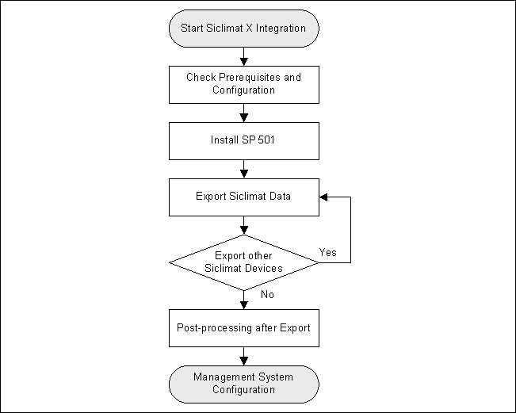
Initial Steps
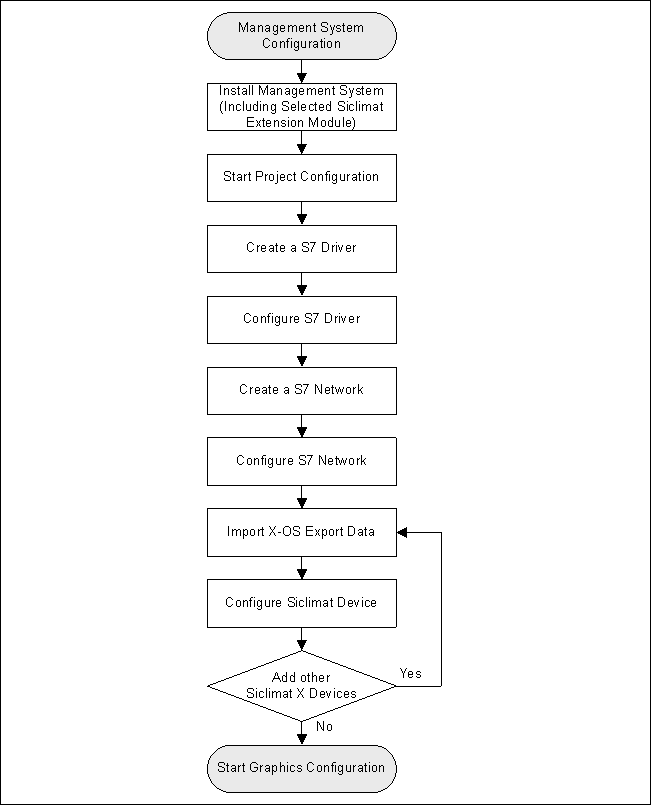
Extended Workflow
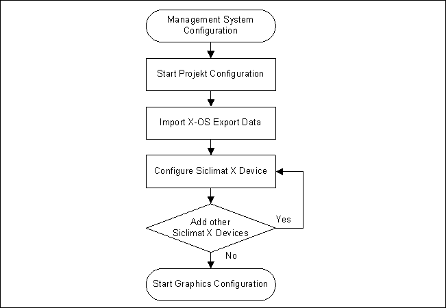
SICLIMAT X Migration to the System
Only SICLIMAT X OS V4.1 or higher connected to S7 PLC can be migrated.
The migration must be performed offline because of possible data interruptions.
The conversion of project-specific graphic symbols (typicals) must be handled by the engineer.
How are SICLIMAT X Graphics Converted to Desigo CC Graphics?
This is a SICLIMAT X graphic before the migration to Desigo CC:
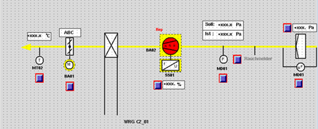
This is the same graphic after migration to Desigo CC:
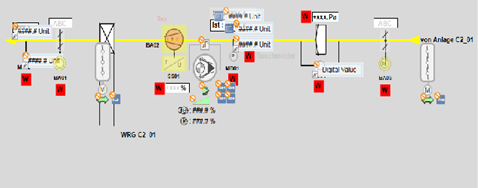
SICLIMAT X graphics are drawn in multiple layers that include all static elements, such as lines, text, rectangles. You can choose if an element is in the foreground or background.
SICLIMAT X data points become positioned symbols with dynamic information (Technical Designation or User Designation).
SICLIMAT X buttons of the widget type are converted to plain text on the graphic. You must post-engineer the widget command using Desigo CC concepts and functionality.
SICLIMAT X buttons of the control type are converted to positioned graphic link buttons.
SICLIMAT X APIC attributes are displayed in the contextual pane.
SICLIMAT X basic shapes (line, lines, circle, ellipse, arc, rectangle, B-spline, spoly, polygon) are replaced with Desigo CC shapes. For example, the figure on the left shows a polygon in SICLIMAT X and the figure on the right shows the migrated polygon in Desigo CC:
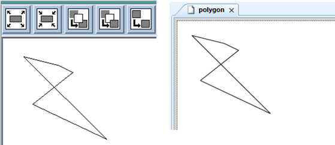
Desigo CC shows symbols as groups of basic shapes. For example, a migrated fan symbol will look like two lines and a circle with no graphic animation. Desigo CC checks if elements have a dynamic reference. If elements nearby represent the same symbol, then only one symbol is placed on the start position of the element. For example, the two lines and the circle, which represent a fan in SICLIMAT X (1), are replaced with a fan symbol in Desigo CC (2):
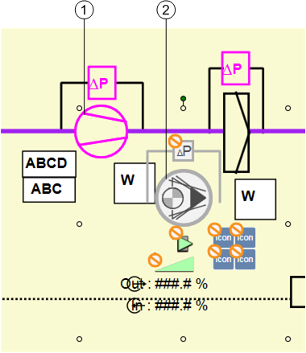
Standard Graphics
SICLIMAT X standard graphics are automatically mapped to Desigo CC graphics. For example, MW_AT_AF is a standard graphic.
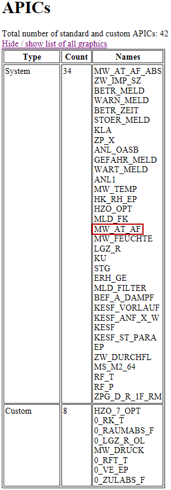
The MW_AT_AF standard graphic is mapped to a Desigo CC function.
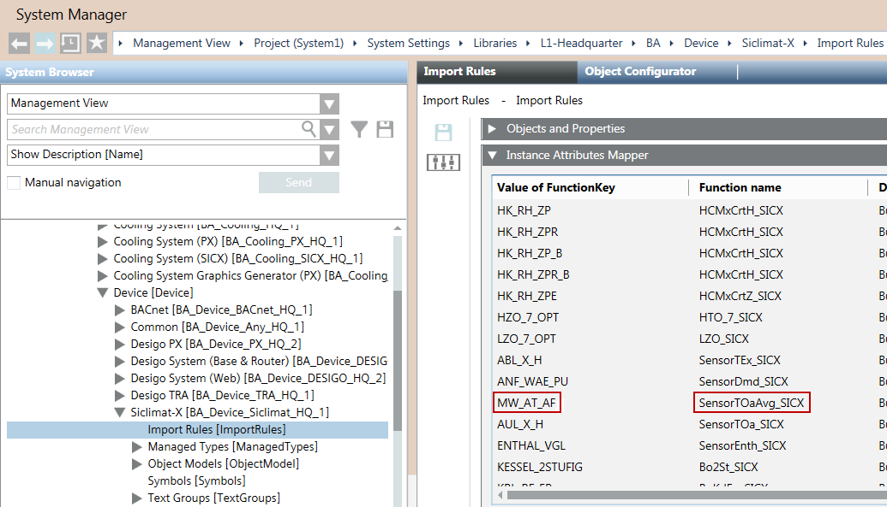
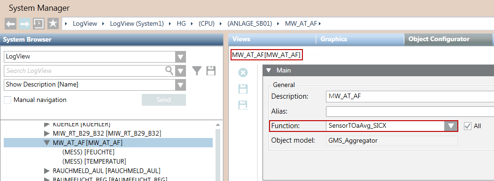
The function is mapped to a Desigo CC symbol.
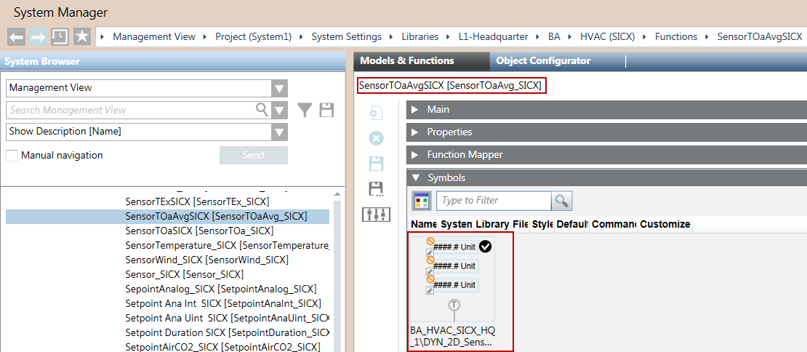
Custom Graphics
SICLIMAT X custom graphics are not automatically mapped to Desigo CC graphics. You must map the custom graphics to Desigo CC graphics before you migrate the SICLIMAT X graphics to Desigo CC.
SICLIMAT X Migration Workflow
Preconditions
- Desigo CC is installed on a new computer.
- SICLIMAT X OS V4.1 with all relevant Service Packs is installed.
Migration Workflow
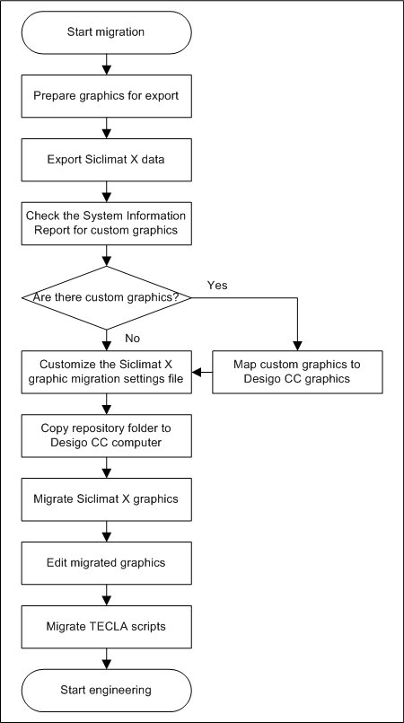
SICLIMAT X Library
The SICLIMAT X library comes with the installation of its extension module and is available under the following path:
System Settings > Libraries > L1-Headquarter > BA > Device > SICLIMAT X > Import Rules.
It contains the default set of data type definitions, including Object Models, Import Rules, and Text Groups supported by the current version of the management platform.
Object Models
The SICLIMAT X Object Models are imported in the Object Models folder of the SICLIMAT X library.
The SICLIMAT X Object Models include the SICLIMAT X Data Point Types (DPTs) that can be used in the SICLIMAT X configuration XML file to import.
The SICLIMAT X Data Model for the current version includes any required Data Types (network, driver, and device instances) and all the basic Data Point Types (SICLIMAT X items).
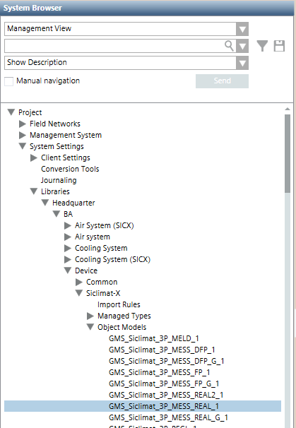
Object Models and Properties | ||||
ObjectModelName | Original Property Name | Shadow Property Name | PropertyDescription | Input Format |
GMS_Siclimat_OPT_SCHALT_1 | Zeitpunkt_HHMM | Zeitpunkt_HHMM_Shadow | Point Of Time HHMM | HH:MM |
GMS_Siclimat_OPT_SCHALT_1 | Zeitpunkt_Tag | Zeitpunkt_Tag_Shadow | Point Of Time Day | Decimal |
GMS_Siclimat_OPT_SCHALT_1 | Zeitpunkt_Monat | Zeitpunkt_Monat_Shadow | Point Of Time Month | Decimal |
GMS_Siclimat_OPT_STELL_1 | Zeitpunkt_HHMM | Zeitpunkt_HHMM_Shadow | Point Of Time HHMM | HH:MM |
GMS_Siclimat_OPT_STELL_1 | Zeitpunkt_Tag | Zeitpunkt_Tag_Shadow | Point Of Time Day | Decimal |
GMS_Siclimat_OPT_STELL_1 | Zeitpunkt_Monat | Zeitpunkt_Monat_Shadow | Point Of Time Month | Decimal |
GMS_Siclimat_HZO_1 | TA1_Aufheizzeit1 | TA1_Aufheizzeit1_Shadow | TOa1 Heating-up Time 1 | HH:MM |
GMS_Siclimat_HZO_1 | TA1_Aufheizzeit2 | TA1_Aufheizzeit2_Shadow | TOa1 Heating-up Time 2 | HH:MM |
GMS_Siclimat_HZO_1 | TA2_Aufheizzeit1 | TA2_Aufheizzeit1_Shadow | TOa2 Heating-up Time 1 | HH:MM |
GMS_Siclimat_HZO_1 | TA2_Aufheizzeit2 | TA2_Aufheizzeit2_Shadow | TOa2 Heating-up Time 2 | HH:MM |
GMS_Siclimat_HZO_1 | TA3_Aufheizzeit1 | TA3_Aufheizzeit1_Shadow | TOa3 Heating-up Time 1 | HH:MM |
GMS_Siclimat_HZO_1 | TA3_Aufheizzeit2 | TA3_Aufheizzeit2_Shadow | TOa3 Heating-up Time 2 | HH:MM |
GMS_Siclimat_HZO_1 | Schutzzeit_Aufheizen | Schutzzeit_Aufheizen_Shadow | Heating-up Protection time | HH:MM |
GMS_Siclimat_HZO_1 | Naechst_Schaltp_HHMM | Naechst_Schaltp_HHMM_Shadow | Next Switching Point HHMM | HH:MM |
GMS_Siclimat_HZO_1 | Nutzungsbeginn_HHMM | Nutzungsbeginn_HHMM_Shadow | Usage Start Time HHMM | HH:MM |
GMS_Siclimat_HZO_1 | Aufheizbeginn_HHMM | Aufheizbeginn_HHMM_Shadow | Heating-up Start HHMM | HH:MM |
GMS_Siclimat_HZO_1 | StzbetrBeginn_HHMM | StzbetrBeginn_HHMM_Shadow | Sustained Mode Start HHMM | HH:MM |
GMS_Siclimat_HZO_1 | Naechst_Schaltp_Tag | Naechst_Schaltp_Tag_Shadow | Next Switching Point Day | Decimal |
GMS_Siclimat_HZO_1 | Naechst_Schaltp_Monat | Naechst_Schaltp_Monat_Shadow | Next Switching Point Month | Decimal |
GMS_Siclimat_LZO_1 | TA1_Abkuehlzeit1 | TA1_Abkuehlzeit1_Shadow | TOa1 Cool-down Time 1 | HH:MM |
GMS_Siclimat_LZO_1 | TA1_Abkuehlzeit2 | TA1_Abkuehlzeit2_Shadow | TOa1 Cool-down Time 2 | HH:MM |
GMS_Siclimat_LZO_1 | TA1_Aufheizzeit1 | TA1_Aufheizzeit1_Shadow | TOa1 Heating-up Time 1 | HH:MM |
GMS_Siclimat_LZO_1 | TA1_Aufheizzeit2 | TA1_Aufheizzeit2_Shadow | TOa1 Heating-up Time 2 | HH:MM |
GMS_Siclimat_LZO_1 | TA2_Aufheizzeit1 | TA2_Aufheizzeit1_Shadow | TOa2 Heating-up Time 1 | HH:MM |
GMS_Siclimat_LZO_1 | TA2_Aufheizzeit2 | TA2_Aufheizzeit2_Shadow | TOa2 Heating-up Time 2 | HH:MM |
GMS_Siclimat_LZO_1 | TA3_Aufheizzeit1 | TA3_Aufheizzeit1_Shadow | TOa3 Heating-up Time 1 | HH:MM |
GMS_Siclimat_LZO_1 | TA3_Aufheizzeit2 | TA3_Aufheizzeit2_Shadow | TOa3 Heating-up Time 2 | HH:MM |
GMS_Siclimat_LZO_1 | Aufheizbeginn_HHMM | Aufheizbeginn_HHMM_Shadow | Heating-up Start HHMM | HH:MM |
GMS_Siclimat_LZO_1 | Stuetzbeg_LHZO_HHMM | Stuetzbeg_LHZO_HHMM_Shadow | Sustained Mode AHU-Heating HHMM | HH:MM |
GMS_Siclimat_LZO_1 | Abkuehlbeginn_HHMM | Abkuehlbeginn_HHMM_Shadow | Start Cooling HHMM | HH:MM |
GMS_Siclimat_LZO_1 | Stuetzbeg_LKZO_HHMM | Stuetzbeg_LKZO_HHMM_Shadow | Sustained Mode AHU-Cooling HHMM | HH:MM |
GMS_Siclimat_LZO_1 | Naechst_Schaltp_HHMM | Naechst_Schaltp_HHMM_Shadow | Next Switching Point HHMM | HH:MM |
GMS_Siclimat_LZO_1 | Naechst_Schaltp_Tag | Naechst_Schaltp_Tag_Shadow | Next Switching Point Day | Decimal |
GMS_Siclimat_LZO_1 | Naechst_Schaltp_Monat | Naechst_Schaltp_Monat_Shadow | Next Switching Point Month | Decimal |
GMS_Siclimat_3P_SB01_1 | Iststufe | IststufeEnum | Present Command 2 | GmsEnum |
NOTE1: The shadow properties of the SICLIMAT X object models display in the Extended Operation pane instead of the original properties. If the original properties are referenced in any graphics, you need to manually replace the original properties with the shadow properties.
NOTE2: The Iststufe property is of GmsBitString type which cannot be displayed in TrendView properly. The shadow property IststufeEnum is introduced which will be auto updated with corresponding value when the value in Iststufe changes.
Text Groups
The SICLIMAT X Text Groups are part of the SICLIMAT X library. In particular:
- Text Groups with numbers from TxG_SICX_0001 to TxG_SICX_4999 belong to the Headquarter SICLIMAT X library.
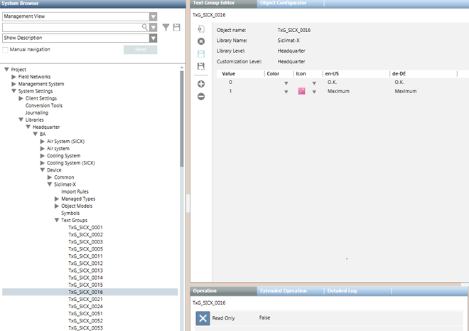
- If the configuration file to import contains text groups that are not present in the Headquarter SICLIMAT X library, they will be available after the import in System Settings > Libraries > L4-Project > Common > Common > Texts.
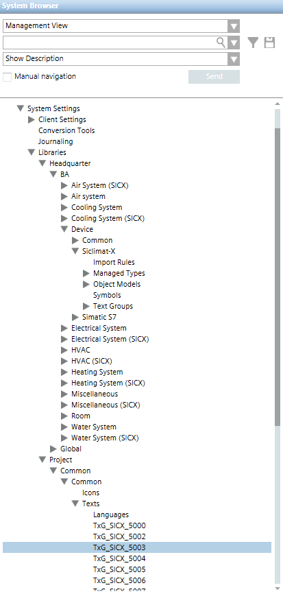
Import Rules
Import rules are a library element used to collect the rules for importing objects into the system. You can configure those rules for importing the definitions of a given SICLIMAT X family’s objects and the related system Type Functions associated to them. You can:
- Specify objects and properties for the import rules
- Map instance attributes
- Specify the alarms configuration
Objects and Properties
Once a CSV file is extracted, the Objects and Properties expander allows you to specify the import rules for objects and properties.
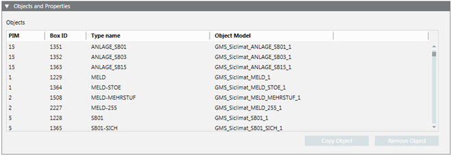
Item | Description |
PIM | SICLIMAT X object type identifier. |
Box ID | SICLIMAT X data type identifier. |
Type Name | SICLIMAT X object name for the hierarchies mapping that will be generated from Box ID and PIM in the XML import file by the import. |
Object Model | For each SICLIMAT X type, you can select an object model. |
Copy Object | Create a copy of the selected object. |
Remove Object | Remove the selected object from the list of objects. |
Instance Attributes Mapper
Once a CSV file is extracted, the Instance Attributes Mapper expander allows you to map the instance attributes.
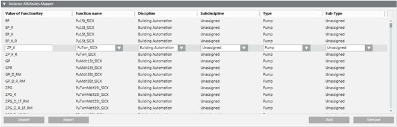
Instance Attributes
The Instance Attributes table contains the configuration data for the instance attributes mapping imported from a CSV file.
For each instance attribute it is possible to specify:
- Value of the function key
- Function name
- Discipline, sub-discipline, type, and subtype
Apart from modifying existing instance attributes, it is also possible to create new instances or remove existing instances.
Alarm Configuration
Once a CSV file is extracted, the Alarm Configuration expander allows you to specify the mapping between SICLIMAT X event classes and the management platform alarm classes.
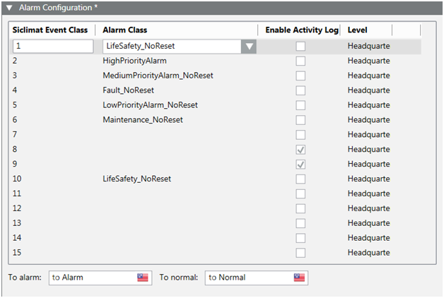
| Description |
SICLIMAT Event Class | Integer number that belongs to the SICLIMAT X event in the import XML file. The mapping between SICLIMAT Event Class and the management platform Alarm Class belongs to SICLIMAT X library. SICLIMAT Event Class IDs
|
Alarm Class | Management platform Alarm Class that corresponds to the selected SICLIMAT Event Class. |
Enable Activity Log | If this check box is selected and the SICLIMAT Event Class is set to active in the file to import, the Activity Log (AL) will be enabled in the management platform for this alarm class. |
To alarm | Indicates the alarm text for the incoming event which will be imported for the Alarm Class. It can be edited for the SICLIMAT Event Class selected in the table. |
To normal | Indicates the alarm text for the outgoing event which will be imported for the Alarm Class. It can be edited for the SICLIMAT Event Class selected in the table. |